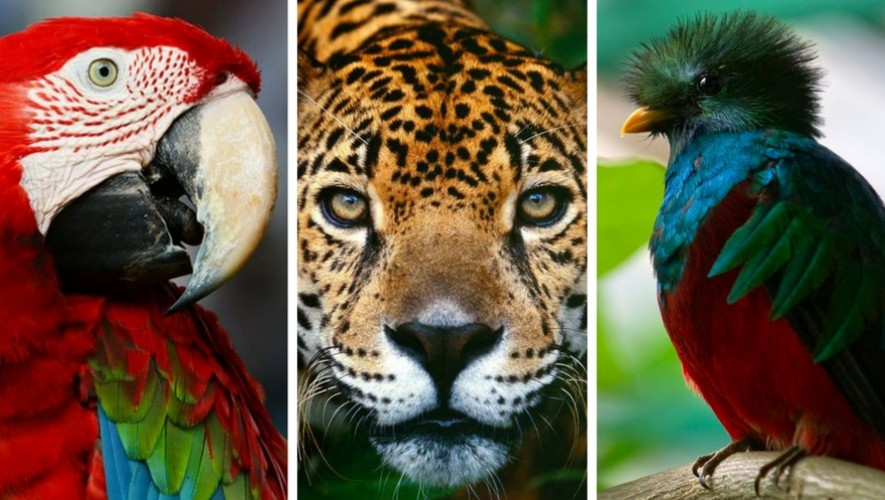

Todas las poblaciones que interactúan en un área determinada constituyen una comunidad biótica. Un bioma es un conjunto de comunidades que abarcan grandes extensiones geográficas y contienen asociaciones similares de plantas y animales. El clima es el principal factor que determina las formas de vida y los biomas.
A pesar de que son unidades de estudio muy útiles, las comunidades son establecidas de manera arbitraria, ya que no se pueden determinar límites o fronteras entre una y otra. También es importante saber que una comunidad no puede estudiarse de manera fragmentada, ya que todos sus componentes interactúan de tal forma que la hacen única. Estos componentes pueden ser físicos (clima, suelo, área), biológicos (migración, mutualismo, etc.) o históricos (coevo lución, antecedentes históricos del área). Una comunidad es el conjunto de todas las especies que viven en una misma área.

Las características básicas de una comunidad son:
Abundancia. Es el número de individuos (organismos) que se encuentran en el área de estudio y que conforman a la comunidad.
Diversidad. Aunque el concepto tradicional se refiere al número de especies diferentes que constituyen una comunidad, actualmente se considera que abarca a la diversidad de especies de plantas y animales que viven en un sitio, a su variabilidad genética, a los ecosistemas de los cuales forman parte estas especies y a los paisajes o regiones donde se ubican los ecosistemas. También incluye los procesos ecológicos y evolutivos que se dan a nivel de genes, especies, ecosistemas y paisajes.
Dominancia. Se refiere a la especie que sobresale en una comunidad, ya sea por el número de organismos, el tamaño, su capacidad defensiva, etc. La comunidad, por lo general, lleva el nombre de la especie que domina, por ejemplo, un pinar, comunidad de espinos, banco de ostras, etc. Las especies dominantes influyen sobre el ambiente local proveyendo la estructura espacial y regulando los recursos de los cuales la mayoría de las especies dependen.
Estratificación. Se refiere al acomodo de las especies en el espacio que ocupan, puede decirse que las poblaciones que integran a una comunidad van a presentar una estructura que puede ser estudiada de forma vertical, horizontal o bien en forma temporal. En todas ellas la estructura presenta capas a las que llamamos estratos. Las comunidades se pueden encontrar en estratos o capas horizontales o bien verticales. De igual manera existen comunidades mono estratificadas, donde su estratificación vertical es muy pequeña y solo se permite distinguir un estrato, tal es el caso de las zonas rocosas o desérticas cuyos animales y plantas forman una capa al mismo nivel.
Niveles de organización
Para facilitar el estudio de la naturaleza, se identifican diversos niveles en ella, pero hay que tener presente que solo existen para poder analizar por separado elementos que se encuentran interactuando.
Al hablar de ecosistema o sistema ecológico nos referimos a un conjunto de organismos que generan una dinámica entre sí y con las condiciones que los rodean, generando un sistema donde la energía y la materia fluyen en un ciclo continuo.
Dicho sistema puede observarse en el grupo total de organismos que habitan la Tierra (biosfera), dentro de una región específica o en áreas más pequeñas. En cada ecosistema es posible encontrar los siguientes niveles de organización:
Es un ser vivo, animal o vegetal, único en cuanto a su información genética y con características que lo definen y que establecen la forma en que se relacionara con el resto de factores, animados o inanimados. Es visto como la unidad mínima de estudio en los sistemas naturales.
Se entiende como un grupo de organismos que coexisten en un mismo lugar y tiempo, y que interactúan constantemente para tener mejores oportunidades de supervivencia.
Gremios. Son conjuntos de poblaciones que coinciden en la forma de alimentarse o en la manera en que utilizan los recursos del ecosistema, aun cuando sean de diferentes especies.
Están formadas por varias poblaciones que viven en la misma zona y al mismo tiempo. También se les conoce como biocenosis.
Son ecosistemas complejos, ubicados en regiones específicas del planeta.
Tienen características particulares en cuanto a clima, tipo de suelo, flora y fauna.
Distinguir estos diferentes niveles permite realizar estudios más precisos, ya que cada estrato ofrece información distinta, según lo que se esté analizando. No hay que perder de vista que estas divisiones son artificiales y que cada organismo influye en el resto, aunque sea de manera imperceptible; así, los factores bióticos y abióticos del planeta entero están interactuando todo el tiempo.
Se conoce como biocenosis a una comunidad biótica, es decir, al conjunto de organismos que viven en un lugar determinado, los cuales coexisten en su medio o biotopo. Por su parte, el biotopo es el lugar o habitad con condiciones físicas y químicas, donde pueden desarrollarse en condiciones óptimas. Es importante señalar que el término “comunidad biótica” se utiliza de manera general, ya que puede referirse a comunidades menores, como un charco de agua o tan grande como una selva.
El número de biomas varían según la clasificación utilizada. Los más representativos son:
TUNDRA
|
TAIGA
|
BOSQUE
|
PRADERA |
SELVA |
DESIERTO |
María Eugenia Méndez Rosales, (2015), Ecología y medio ambiente, Book Mart, México,pag.45.
http://ema-ceic.blogspot.mx/2013/02/tema-4-identifica-las-caracteristicas.html